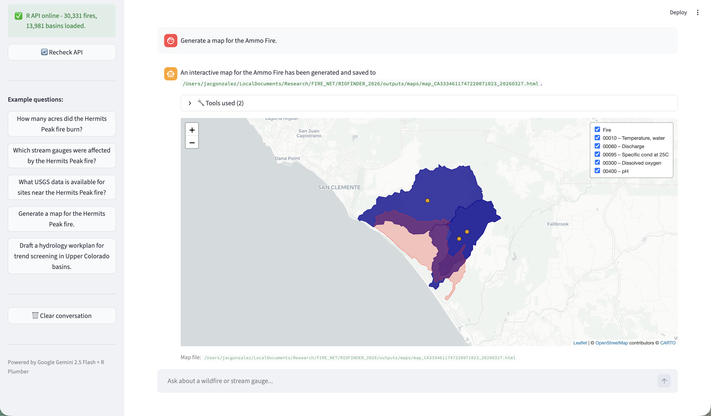
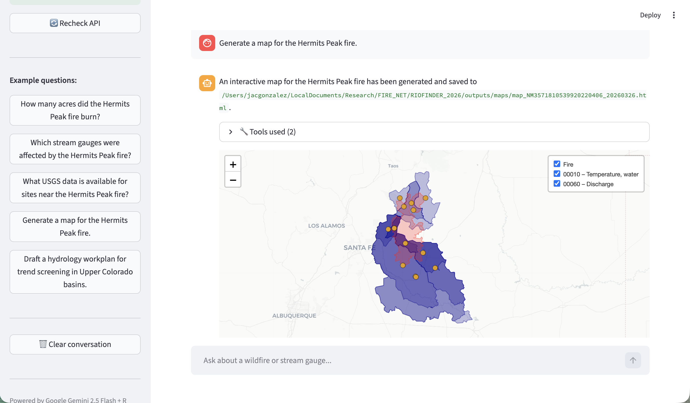
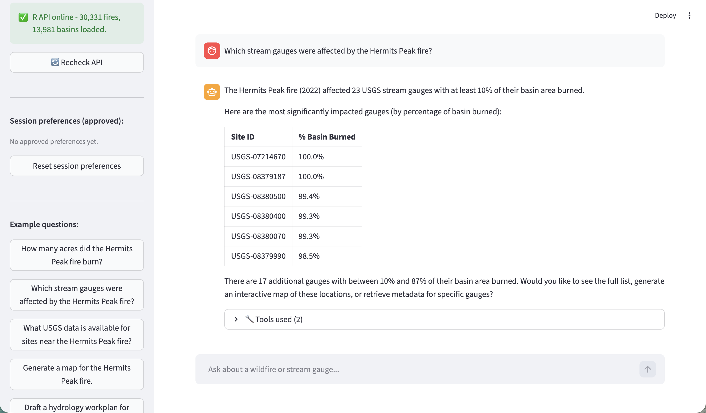
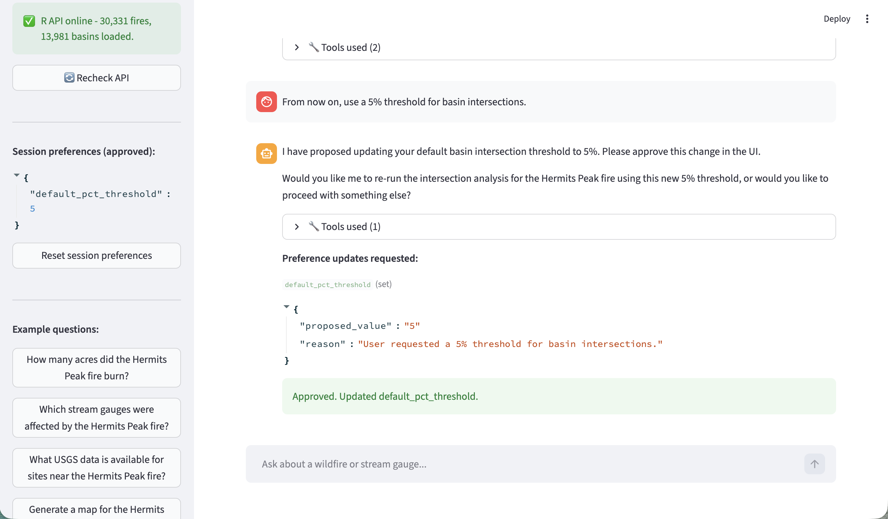
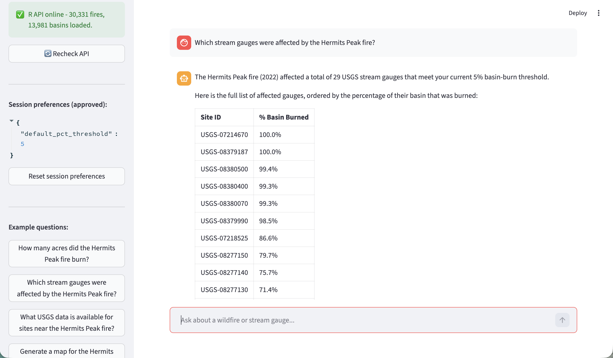
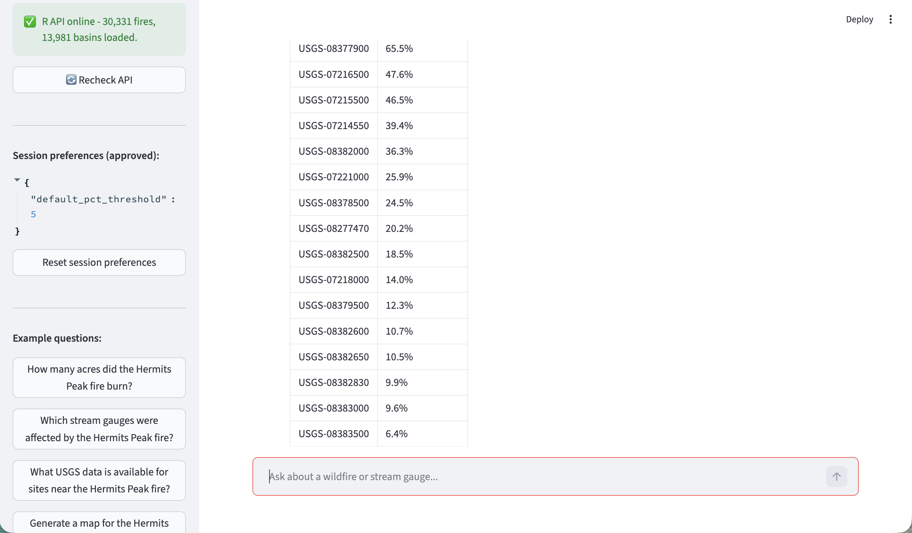
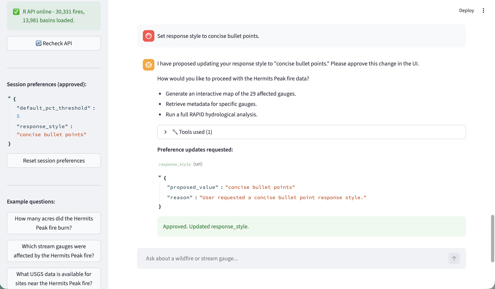
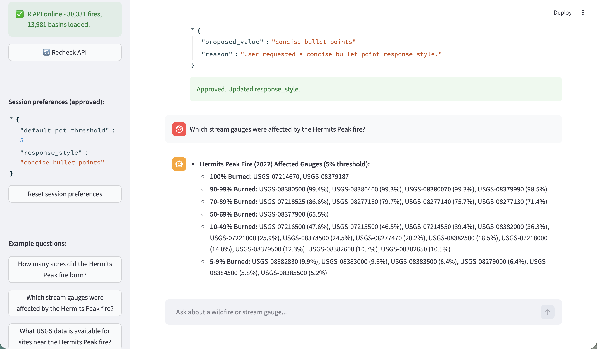
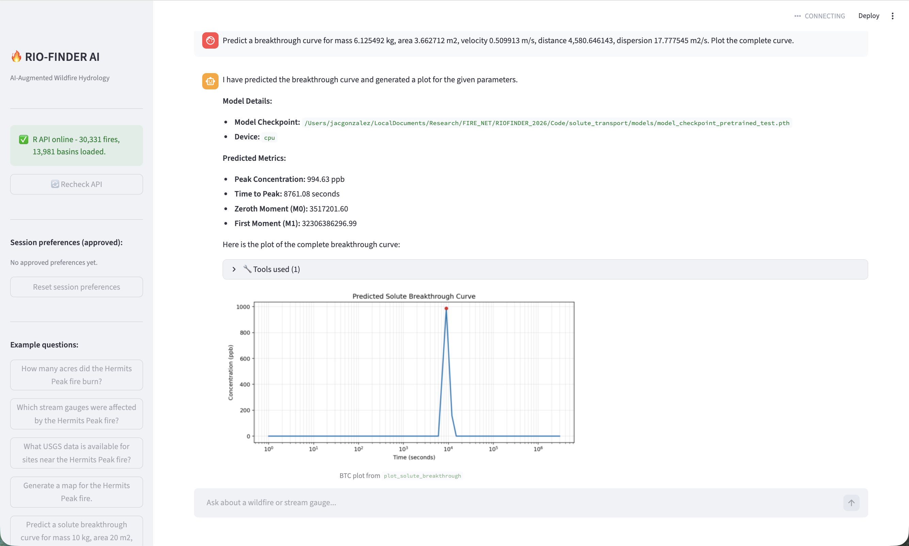
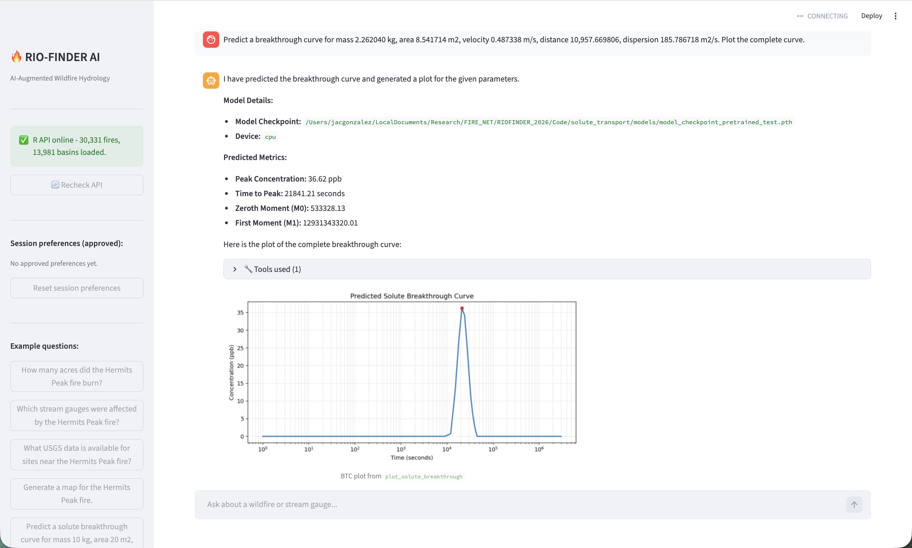

RIO_FINDER Tool Set
RIO_FINDER provides wildfire-to-water intelligence by linking fire perimeters, basin networks, and stream gauge systems to identify where post-fire impacts are most likely and where monitoring should be prioritized.
Hydrology Agent Demonstration
FIRE_NET Agent is an AI-powered wildfire hydrology assistant that combines fire intelligence, watershed context, and predictive modeling to support faster, better-informed decisions before, during, and after wildfire events.
FIRE_NET integrates complementary tooling to connect wildfire context, monitoring priorities, and predictive transport outputs into one decision-support workflow.
RIO_FINDER provides wildfire-to-water intelligence by linking fire perimeters, basin networks, and stream gauge systems to identify where post-fire impacts are most likely and where monitoring should be prioritized.
Solute Transport Prediction estimates contaminant breakthrough behavior using physically meaningful transport inputs and produces concentration-time outputs for risk screening and scenario comparison.
The examples below are grouped by capability and show conversation-based outputs from FIRE_NET. Each card includes a short use case, expected outcome, and example caption.
Maps wildfire perimeters to watershed networks to quickly identify hydrologically impacted areas.


Flags stream gauges affected above user-defined thresholds to focus monitoring where it matters most.




Tailors fire-water insights to each user's locations, thresholds, and operational priorities.


Predicts and plots BTC curves from transport inputs, with key metrics for fast scenario analysis.

